Every Screen, Workflow & Diagnostic Decision — Connected.
MediScan AI synthesizes 18 Stitch-generated screens into an end-to-end clinical loop: from instant DICOM ingestion and AI CADe lesion localization to risk-adjusted emergency triage, longitudinal case tracking, and board-certified physician sign-off.
Interactive Application Preview
LIVE ROUTINGClick any sidebar item or button inside the frame — navigation routes smoothly across all screens.
The Clinical Connection Loop
END-TO-END FLOWHow data, AI inference, clinician oversight, and regulatory compliance connect seamlessly across the MediScan AI platform.
Scan Ingestion & Datasets
Accepts DICOM, Chest X-rays, Brain MRIs, Abdominal CTs, and clinical cohort CSV datasets with validation.
AI Inference & Explainability
Runs lesion detection, CAM heatmap generation, bounding box overlays, and confidence/uncertainty scoring.
Doctor Review & Approval
Qualified radiologists (Dr. Mehta, Dr. Nair) inspect longitudinal history, audit logs, and approve/override AI findings.
Report Sign-Off & Audit
Generates legal PDF medical reports with digital clinician signature, PACS archival, and urgent notification alerts.
A 64-year-old male with Chest PA X-Ray showing right lower lobe alveolar consolidation and elevated fever (38.8°C). This single patient links the entire platform: Dashboard (top critical alert) → Risk Board (<1h emergency review column) → AI Analysis (94.2% pneumonia probability + heatmap) → Case Details (full longitudinal history) → Reports (signed diagnostic summary).
Complete Screen Gallery (18 Views)
Every exported screen and responsive layout variant generated from the master prompt.
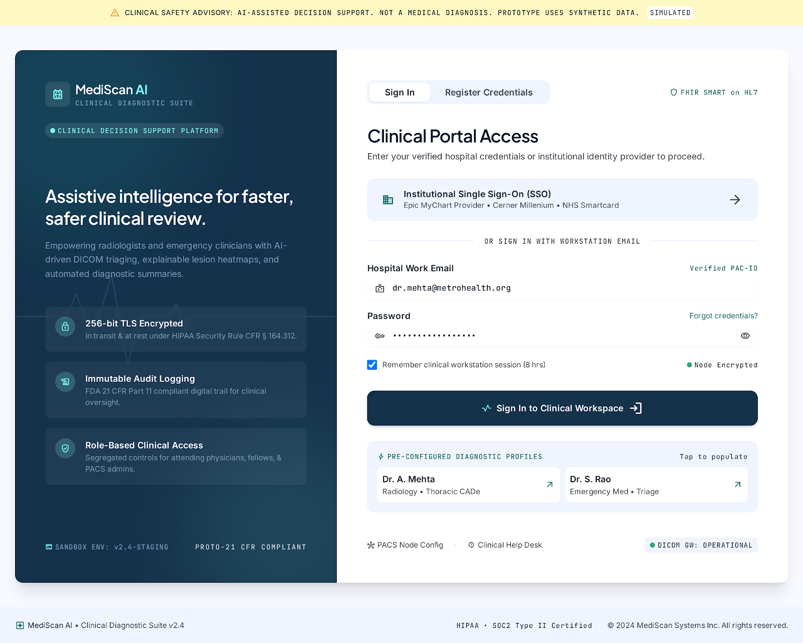
Screen 01Authentication & Access
SAML/OAuth2 institutional login, clinician credentialing, role verification.
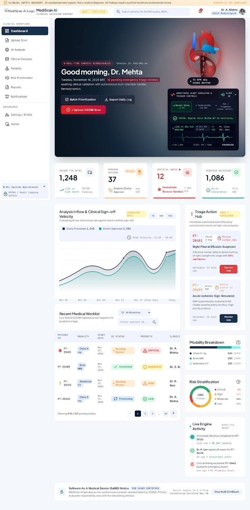
Screen 02 (Hero)Main Clinical Dashboard
Executive metrics, inflow rate, high-priority emergency queue, 30D trends.
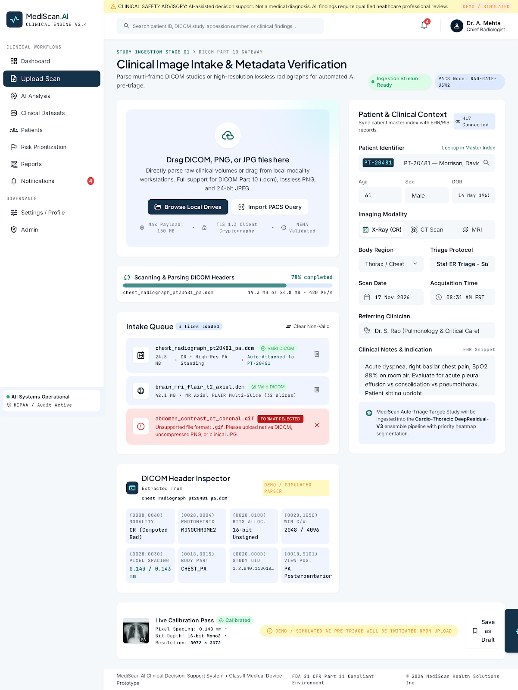
Screen 03Upload Medical Scan
Drag-and-drop DICOM validator, modality segmented selector, PACS query.
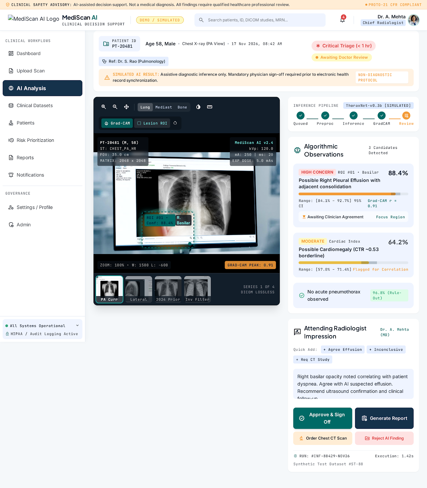
Hero Screen 04AI Image Analysis (Desktop)
Dark diagnostic DICOM viewport, CAM heatmap toggle, uncertainty intervals.
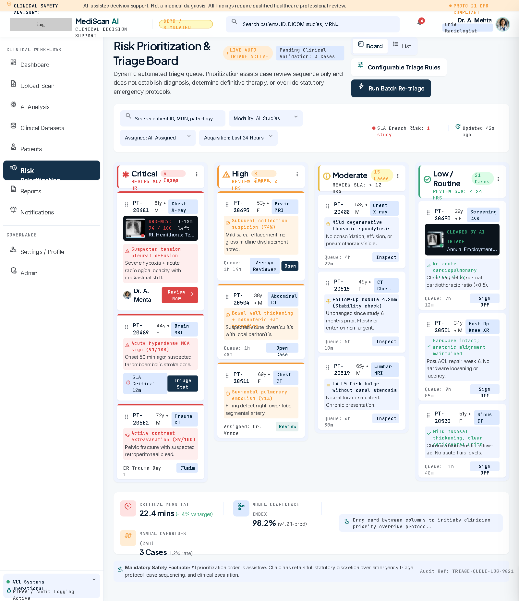
Screen 08Risk Prioritization Board
Kanban triage lanes (Critical, High, Moderate, Low) with threshold sliders.
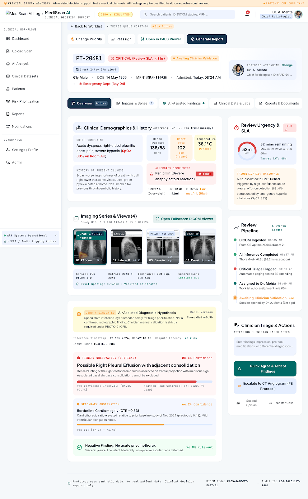
Screen 07Case Details (PT-20481)
Patient demographics, historical scans, clinical timeline, and audit trail.
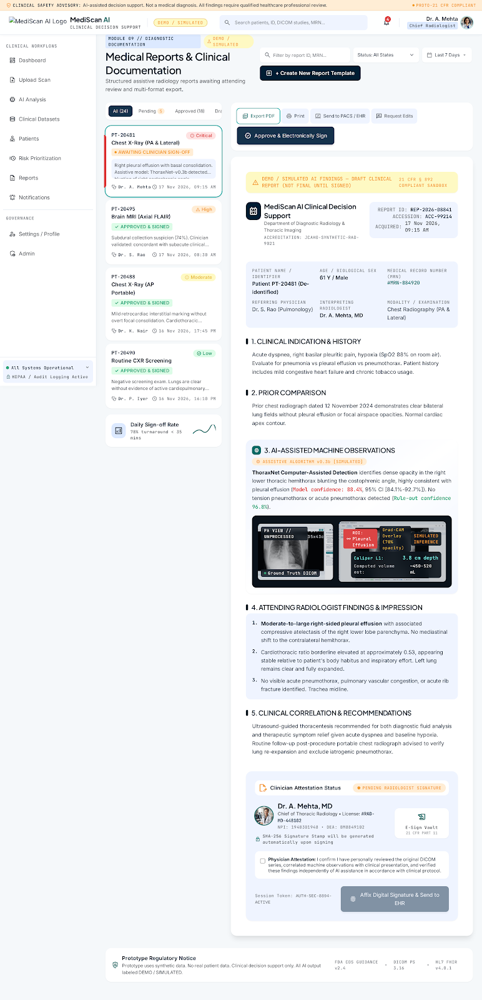
Screen 09Medical Reports & Sign-Off
Legal diagnostic documentation, digital signature capture, and PDF export.
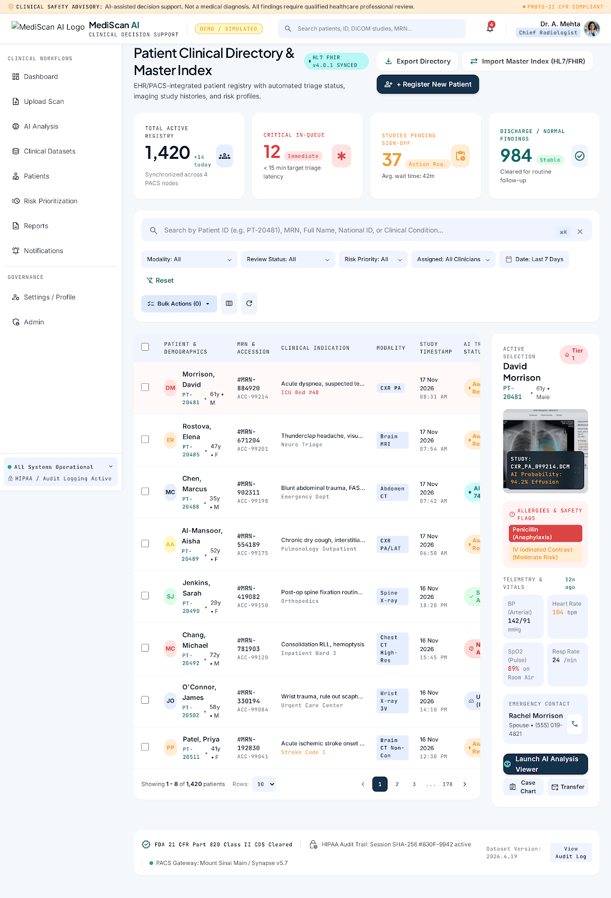
Screen 06Patient Management
Master patient directory, modality filters, doctor assignments, triage status.
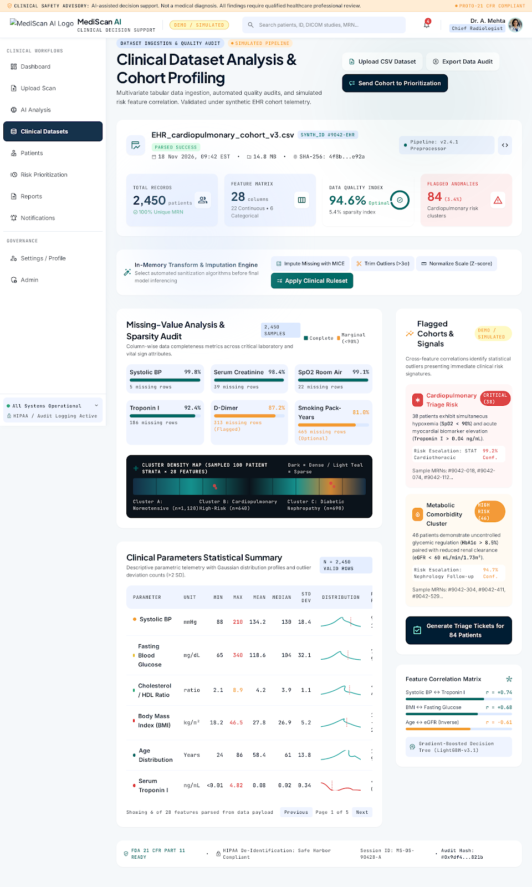
Screen 05Clinical Dataset Analysis
CSV dataset quality scores, missing-value heatmaps, parameter histograms.
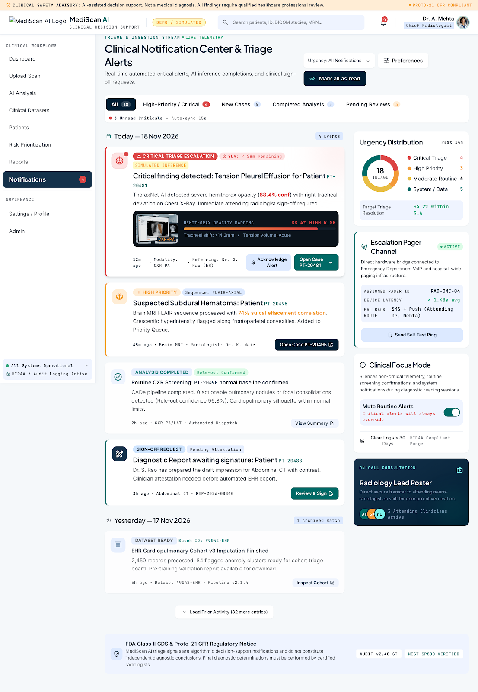
Screen 10Alerts & Notifications
Critical findings alert dispatch, pending review reminders, real-time events.
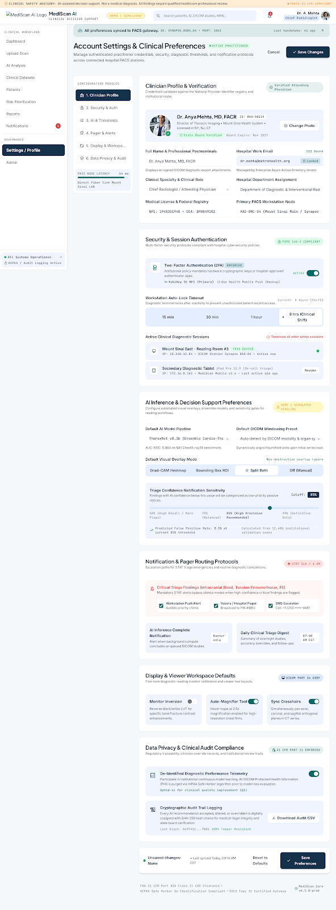
Screen 11Clinician Profile & Settings
Physician NPI credentials, security settings, 2FA, data retention policies.
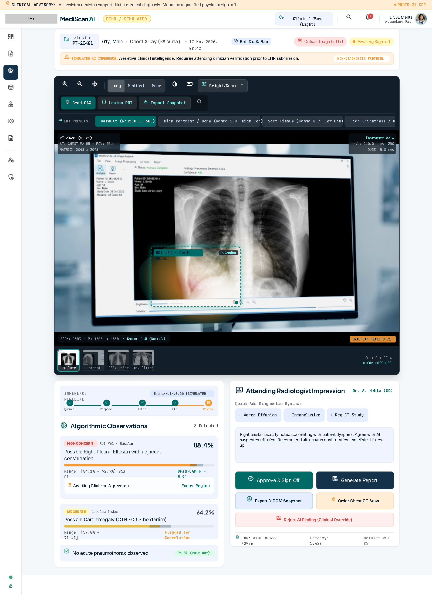
Tablet & MobileTablet / Mobile Views (4 Variants)
Ergonomic touch layouts for bedside tablet rounds and emergency consults.
Clinical Clarity Design System Standards
Strict ergonomic and diagnostic requirements codified across all screens.
Medical Navy (#15324B) anchors chrome and high-level hierarchy. Deep Clinical Teal (#16A6A1) drives active toggles, sync states, and progress paths. Diagnostic viewport shifts to dark tokens (#0B131B).
Four priority levels: Critical (#DC4444), High (#F39A38), Moderate (#E8BD45), and Low (#36A477). Never rely on color alone—paired with alert iconography and SLA time limits.
Plus Jakarta Sans for geometric architectural authority. Inter for dense readable clinical notes. JetBrains Mono for tabular patient IDs (PT-20481), coordinates, and confidence bounds.
Every AI finding is tagged DEMO / SIMULATED. AI is assistive only and never provides final diagnoses. Mandatory doctor sign-off is required before any report is finalized.